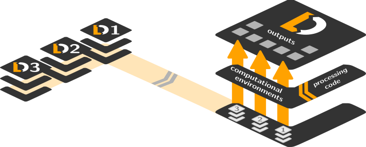

Perpetualdecentralized management of digital objectsforcollaborative open-science
Michael Hanke
Institute of Neuroscience and Medicine, Brain & Behavior (INM-7),
Research Center Jülich
Institute of Systems Neuroscience, Medical Faculty, Heinrich Heine University Düsseldorf


Acknowledgements
|
Funders


Collaborators
|
Simplistic provenance capture
$ datalad run -m "Perform eye movement event detection"\
--input 'raw_data/*.tsv.gz' --output 'sub-*' \
bash code/compute_all.sh
-- Git commit -- Michael Hanke <michael.hanke@gmail.com>; Fri Sep 21 22:00:47 2019
[DATALAD RUNCMD] Perform eye movement event detection
=== Do not change lines below ===
{
"cmd": "bash code/compute_all.sh",
"dsid": "d2b4b72a-7c13-11e7-9f1f-a0369f7c647e",
"exit": 0,
"inputs": ["raw_data/*.tsv.gz"],
"outputs": ["sub-*"],
"pwd": "."
}
^^^ Do not change lines above ^^^
---
sub-01/sub-01_task-movie_run-1_events.png | 2 +-
sub-01/sub-01_task-movie_run-1_events.tsv | 2 +-
...
Comprehensive provenance capture: containerize!
$ datalad containers-run -n nilearn \
--input 'mri/*_bold.nii --output 'sub-*/LC_timeseries_run-*.csv' \
"bash -c 'for sub in sub-*; do for run in run-1 ... run-8;
do python3 code/extract_lc_timeseries.py \$sub \$run; done; done'"
-- Git commit -- Michael Hanke <michael.hanke@gmail.com>; Fri Jul 6 11:02:28 2019
[DATALAD RUNCMD] singularity exec --bind {pwd} .datalad/e...
=== Do not change lines below ===
{
"cmd": "singularity exec --bind {pwd} .datalad/environments/nilearn.simg bash..",
"dsid": "92ea1faa-632a-11e8-af29-a0369f7c647e",
"inputs": [
"mri/*.bold.nii.gz",
".datalad/environments/nilearn.simg"
],
"outputs": ["sub-*/LC_timeseries_run-*.csv"],
...
}
^^^ Do not change lines above ^^^
---
sub-01/LC_timeseries_run-1.csv | 1 +
...
Find out more
|
Comprehensive user documentation in the DataLad Handbook (handbook.datalad.org) |
|
|
|
|
|
|
Contact and more information
| Website + Demos | http://datalad.org |
| Documentation | http://handbook.datalad.org |
| Development | http://github.com/datalad |
| Support | https://matrix.to/#/#datalad:matrix.org |
| Open data | http://datasets.datalad.org |
| We are hiring! | |
| http://psychoinformatics.de |